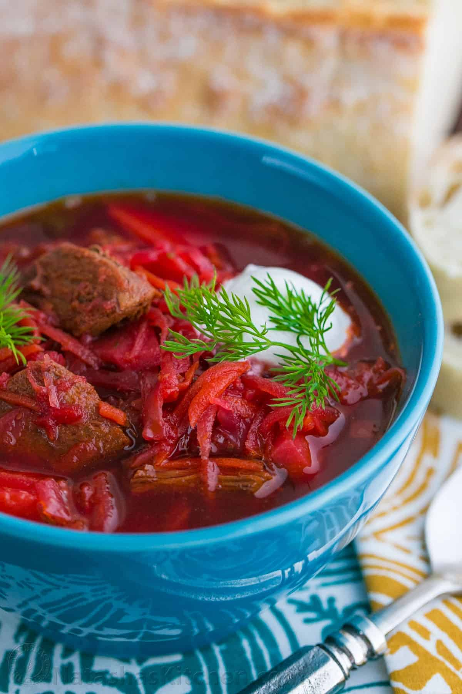

Borscht

Borsch is the famous soup in many Ukrainian families, as well as many Eastern and Central European countries.
The recipes of borsch vary, but vegetables (mainly beet) and sour cream are always the main ingredients.
The beetroot used in cooking borsch gives the soup its trademark deep reddish-purple color.
Ingredients:
- 4 qt. water
- 14 oz. beef stock
- 1 small head of cabbage
- 5 large potatoes
- 1 large carrot
- 1 med. beet root
- 1 med. onion
- 1 bay leaf
- 2 tablespoons tomato paste
- 3-5 cloves garlic
- verdure (parsley, dill, etc.)
- sour cream
Steps:
- Boil the beef stock for at least 1.5 hours, strain the broth through clothing, separate the meat from the bone and carve it.
- Peel the raw beet root, cut it in thin two-inch strips and stew for half an hour.
- Add cubed potatoes in the boiling broth. Add the stewed beet when the broth begins to boil again. Add bay leaf.
- Cut the carrot the same way as the beet root, fry it all over and add into borsch.
- Slice the onion, fry on both sides, add tomato paste. Mix everything and fry for some more time.
- Take the fried onion off the stove and add mashed garlic.
- Shred the cabbage finely and add (but not much) into borsch when the potato is almost cooked.
- Cover the saucepan and boil borscht for 5 minutes. Then add fried onion with garlic and seasonings. Mix everything.
- Cover borsch and cook for 3 more minutes. Then add cut verdure.
- Take borsch off the stove and leave uncovered.